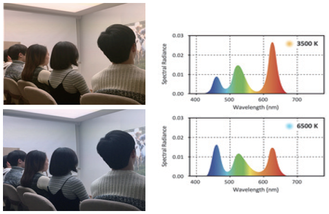

Report by Subjects
Report by Subjects
KAIST RESEARCH ACHIEVEMENTS
Awakening effects of blue-enriched morning light exposure
Department of Industrial Design Hyeon-Jeong Suk
Summary
Known as the 3rd photoreceptor on human retina, the ipRGCs have been highlighted recently. As this was connected to our previous finding of awakening effect of blue-enriched light, we were motivated to examine that the ipRGCs are more sensitive under blue-enriched light. We recruited healthy KAIST students and instructed them to watch educational contents in a lecture room just like their attending classes. We illuminated the space either in 3500 K or 6500 K alternatively. The levels of melatonin and cortisol were observed, and a greater decline in melatonin secretion was found, when subjects were exposed to 6500 K. Also, the result was coherent with subjects' self-assessments, indicating that the blue-enriched light should reduce morning drowsiness. Against the rumor about the harsh effect of blue light, the empirical finding provides objective evidence what we can benefit from the blue-enriched light, particularly for the indoor context. Light is known to influence not only visual color experience, but also the biorhythm. Will the impact be enough to be observed in everyday life?
Background (objectives)
Since the discovery of intrinsically photosensitive retinal ganglion cells (ipRGCs) in the human retina in 2002, bio-rhythms including human awakening and sleep have been verified to be affected by light through various biofeedbacks. Most of the existing studies have dealt with bedtime at night, such as sleep disorders, while controlling external factors. We were motivated to investigate whether blue-enriched white lighting induces pleasant awakening and refreshment in healthy people like a morning coffee. We expected that the blue-enriched white lighting could be used in daily life to effectively sensitize photosensitive ganglion cells.
Contents
Healthy male and female KAIST students participated in the experiment, and the class situation was simulated in a lecture room. As a light stimuli, orange nuanced white LEDs(3500 K) and blue nuanced white LEDs(6500 K) were alternatively switched on. The brightness of both lightings was around 500 lx. The experimental setting was fundamentally different from conventional biology study in which narrow-bandwidth light is projected directly to the human eye.
 [Figure 1] (left) experiment setup (right) spectral power distribution of each lighting condition
 [Figure 2] The tunable white lighting system installed in a lecture room of Department of Industrial Design, KAIST The Nature Media Team created the video contents to promote this study. Released on the Youtube channel: https://youtu.be/ZMgOKboSxec
[Figure 2] The tunable white lighting system installed in a lecture room of Department of Industrial Design, KAIST The Nature Media Team created the video contents to promote this study. Released on the Youtube channel: https://youtu.be/ZMgOKboSxec
The participants watched documentary contents projected on the wall under each lighting environment. Melatonin, cortisol secretion, and subjective evaluation were repeatedly measured. As a result, it was observed that high color temperature illumination (so-called "blue-enhanced white" illumination) is effective for melatonin suppression during the morning. This observation was consistent with the subjective evaluation of the students participating in the experiment. Melatonin suppression in the morning indicates that the human body wakes up. In other words, it can be seen as a benefit of improving efficiency in a learning activity that requires concentration, and waking up early in the morning. In contrast, low color temperature lighting with orange nuance is suitable for relaxation. A slight tuning of the light source, which appears to be plain white, can help people to have a concentrated morning time. In an indoor environment where lighting is highly dependent, this impact will be more pronounced. It offers academically reliable evidence against misunderstandings regarding the ambiguous concern for blue light.
Expected effect
Back in 2016, the same research team demonstrated an improvement of arithmetic skills of the 4th grade students in an elementary school*. The tendency was consistent in physiological test. It was observed that the sympathetic nervous system was more activated under the blue-enriched lighting. The result was highlighted through media coverage worldwide; but the fundamental question remained unresolved. What should be the cause? It was not an easy task as design researchers to try to find a cause in biological science by observing hormonal changes. The research results were selected as a TOP 100 in neuroscience by the Scientific Reports journal, and the Nature Media team produced a promotion video released on the YouTube channel. Networking across disciplines, where convergence research can be actively conducted, is the driving force behind producing cross-disciplinary, novel and qualified research findings. KAIST is in need of further vitalizing the convergence research ecosystem.
Research Outcomes
[Paper] Choi, K., Shin, C., Kim, T., Chung, H. J., & Suk, H. J. (2019) . Awakening effects of blue-enriched morning light exposure on university students’ physiological and subjective responses. Scientific reports, 9: 345. doi: 10.1038/s41598-018-36791-5.
[Press release] YTN, Maeil Business, Nature YouTube, (U.S.) Huffington Post, SBS and other domestic and foreign media *Choi, K. & Suk, H.-J . (2016). Dynamic lighting system for the learning environment: performance of elementary students, Optics Express. 24(10). A907-A916.
Research Funding
NRF, support project for female scientists